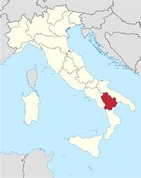
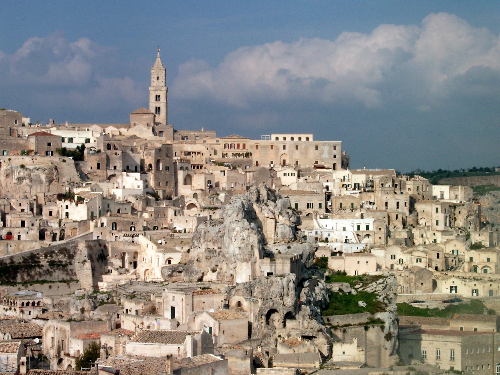
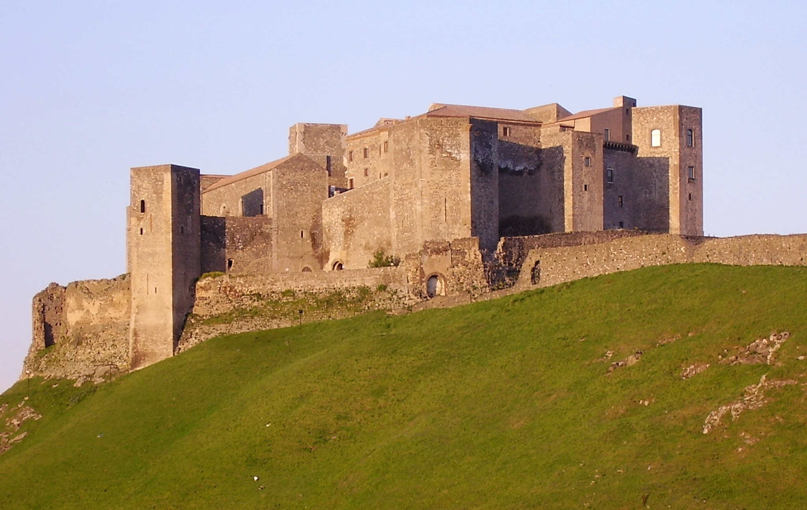
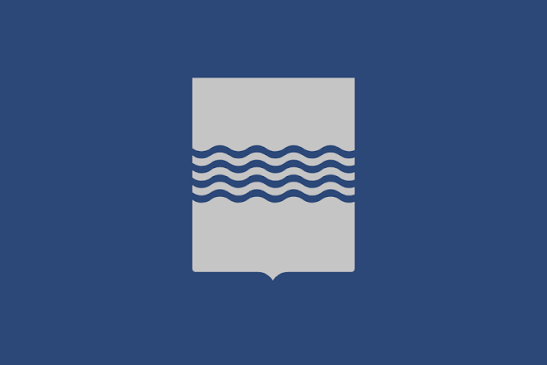
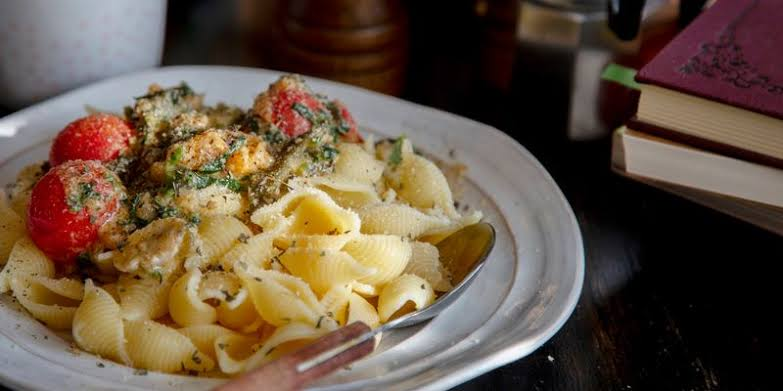
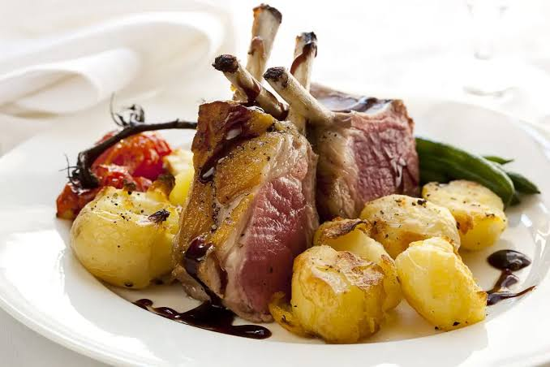
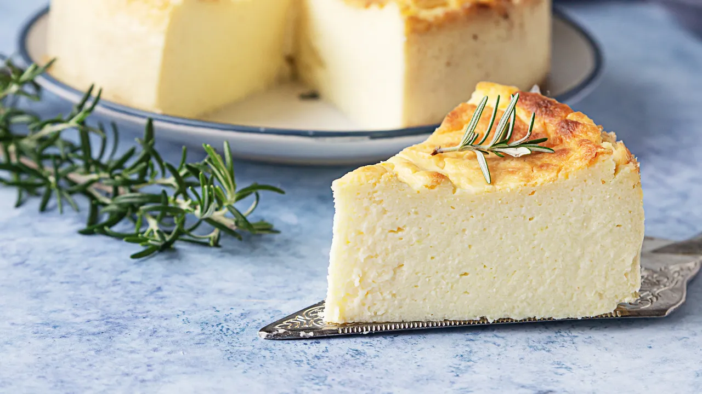
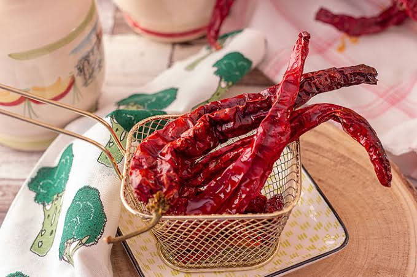

Southern Italy between Campania, Calabria, and Apulia (Puglia)
Potenza
Mountains, forests, and rugged valleys
Italian and Lucanian dialects
Peperoni cruschi, pasta, and lamb dishes
Matera’s cave dwellings and ancient landscapes

Basilicata (also known by its ancient name Lucania) is a mountainous region in Southern Italy, bordered by Campania (west), Puglia (north and east), and Calabria (south), with coastlines along both the Tyrrhenian and Ionian Seas. Much of the landscape is shaped by the Apennine Mountains, rolling hills, forests, and fertile valleys, creating a diverse natural environment. The region is known for its rugged terrain, scenic countryside, and dramatic rock formations, which have influenced its history, agriculture, and traditional way of life.
The region is divided into 2 provinces: Materia and Potenza
Capital (and largest city): Potenza
Basilicata features a highly variable climate ranging from mild, Mediterranean conditions along the coasts to harsh continental weather in the mountainous interior. Because of its diverse and rugged terrain, the region has distinct climate zones.
Summers: Hot and dry, with coastal breezes that make the high temperatures comfortable.
Winters: Mild and rainy, rarely dropping to freezing.
IMPORTANT TO KNOW: The Tyrrhenian side (around Maratea) tends to be more rainy due to mountain clouds blocking storms
Summers: Hot and dry, with temperatures often climbing into the upper 80°F (30° C).
Winters: old and frequently foggy, transitioning from cool spring to summer weather.
Summers: Moderately warm during the day, but nights can be very cool.
Winters: Long and very cold. Sitting at high elevations in the Lucanian Apennines, the region receives more annual snow than many northern Italian cities like Milan.
IMPORTANT TO KNOW: Snow frequently remains on the ground well into mid-spring.
Basilicata has a predominantly mountainous and hilly topography, as it is largely covered by the Apennine mountain range. The landscape is rugged and varied, with steep slopes, deep valleys, and high peaks such as Monte Pollino, which is part of the Pollino National Park. Moving toward the coasts, the terrain gradually becomes lower and more rolling, with flatter areas near the Ionian and Tyrrhenian shores. This varied topography has shaped settlement patterns, agriculture, and transportation across the region.
Basilicata was originally known as Lucania, a name derived from the Oscan-speaking Lucani people of central Italy. Even today, many locals still refer to themselves as Lucani, preserving this ancient identity.
In the late 8th century BC, Greek settlers founded one of the earliest colonies at Siris, established by migrants from Colophon. Later, Achaean colonists founded Metaponto, which helped extend Greek influence along the Ionian coast. Over time, Basilicata became an important part of Magna Graecia, with several Greek city-states established along its coastline.
The first contacts between the Lucanians and the Romans occurred in the second half of the 4th century BC. After Rome’s conquest of Taranto in 272 BC, Roman control expanded across the region, with the construction of major routes such as the Appian Way, and the founding of colonies like Potentia (modern Potenza) and Grumentum.
During the Middle Ages, Basilicata came under Lombard rule, before later passing through Norman, Swabian, Angevin, and Spanish control. These shifts tied the region closely to the broader history of the Kingdom of Naples.
Finally, in 1861, Basilicata was integrated into the newly unified Kingdom of Italy, becoming part of the modern Italian state.
As of 2026, the total population of the region is 525,281 people.
In addition, it has a land area of 10,073 km² and a population density of 52.15 km².
Potenza is the capital of Basilicata and one of the highest regional capitals in Italy, located in the Apennine Mountains. Known for its steep streets and modern urban layout, the city combines historical sites such as the Cathedral of San Gerardo with newer developments built after earthquakes. It serves as the administrative and economic centre of the region.
Population: 63,403 people
Matera is one of the oldest continuously inhabited cities in the world, famous for its Sassi di Matera, ancient cave dwellings carved into limestone. These historic districts are a UNESCO World Heritage Site and make Matera one of Italy’s most unique cultural destinations. Today, it is also a symbol of cultural revival and tourism.
Population: 59,368 people
Policoro is a coastal town on the Ionian Sea known for its beaches and archaeological heritage. It is located near the ancient Greek site of Heraclea, which was an important city of Magna Graecia. Modern Policoro combines seaside tourism with agriculture and historical significance.
Population: 17,727 people
Melfi is a historic town in northern Basilicata, known for its impressive Norman castle built by Emperor Frederick II. The town played an important role in medieval southern Italy and still preserves a strong historical atmosphere. Today, it is also an industrial and agricultural centre while maintaining its cultural heritage.
Population: 16,804 people

The Sassi di Matera are ancient cave dwellings carved directly into the limestone cliffs of Matera. They form one of the oldest continuously inhabited settlements in the world and are now a UNESCO World Heritage Site. The area is famous for its unique landscape of stone houses, churches, and underground structures.

The Castello di Melfi is a historic Norman castle built in the 11th century and later expanded by Emperor Frederick II. It played an important role in medieval southern Italy and remains one of the most impressive fortresses in Basilicata. Today, it also houses a museum showcasing the region’s archaeological heritage.

The flag consists of a field of azure with the coat of arms of Basilicata in the centre.
The flag of Basilicata was officially adopted on 6 April 1999 by the Regional Council, making it the official flag of the region. Although Basilicata has a history dating back thousands of years, its modern regional flag is relatively recent.
The flag is the coat of arms of Basilicata superimposed on the a field of azure. An unofficial variant has "Regione Basilicata" above the coat of arms, a gold-bordered white shield with four blue waves, representing the four major rivers of the region: the Basento, Agri, Bradano and Sinni.
The primary regional dialect spoken in Basilicata is the Lucano dialect, although Standard Italian is used in schools, government, and everyday formal communication. Because Basilicata borders Campania, Puglia, and Calabria, the local dialect changes from one part of the region to another. Communities near Puglia often speak varieties influenced by Pugliese, those near Campania share features with Neapolitan (Campano), while areas close to Calabria are influenced by Calabrese. This makes Basilicata one of Southern Italy's most linguistically diverse regions.
The Lucano dialect belongs to the Napulo-Apulo-Abruzzese dialect group, known by linguists as the Upper Southern Italo-Romance (Italo-Romanzo Alto-Meridionale) language family. This larger group includes many closely related dialects spoken across southern Italy, each with its own pronunciation, vocabulary, and local traditions.
Think of the Lucano dialect like the different varieties of French spoken around the world. Just as French spoken in Quebec and France is still French but has different accents, vocabulary, and expressions, the Lucano dialect has its own unique characteristics while remaining part of a larger linguistic family.
In the same way, the Napulo-Apulo-Abruzzese language group is comparable to the broader French language family. It includes Lucano and several other Southern Italian dialects, each sharing common roots while developing their own regional identities over time.
The food scene in Basilicata is rooted in simplicity, tradition, and locally sourced ingredients, reflecting its rural and mountainous landscape. Cuisine is based on staples such as bread, pasta, legumes, and seasonal vegetables, often paired with olive oil and locally produced cheeses. Meat dishes, especially lamb and pork, are common in traditional cooking, while handmade pasta varieties like orecchiette and strascinati are widely enjoyed. Basilicata’s food culture is also known for its strong flavours despite simple recipes, showing a deep connection to peasant traditions and self-sufficient cooking.

Strascinati is a traditional pasta from Basilicata made by hand, where the dough is "dragged" across a surface to create its characteristic rough shape. This texture helps it hold sauces well, especially simple ones made with olive oil, garlic, vegetables, or spicy peppers. It is a staple of Lucanian cuisine and reflects the region’s rustic, homemade cooking traditions.

Agnello alla lucana is a classic meat dish made with slow-cooked lamb seasoned with herbs, garlic, and olive oil. It is often prepared for special occasions and rural celebrations, highlighting Basilicata’s pastoral traditions. The dish is simple but rich in flavour, usually served with bread or potatoes to complete the meal.

Torta di Ricotta is a traditional Basilicata dessert made with fresh ricotta cheese, sugar, and sometimes citrus zest or chocolate. It has a soft, creamy texture and is often enjoyed during holidays and family gatherings. The dessert reflects the region’s use of simple dairy ingredients to create rich and satisfying sweets.

Peperoni Cruschi are one of Basilicata’s most iconic foods, made from sweet red peppers that are dried and then quickly fried until they become light, crispy, and almost chip-like. They are often used as a topping for pasta, especially strascinati, or eaten on their own as a crunchy snack. This simple yet distinctive ingredient reflects Basilicata’s tradition of preserving food for long periods and turning humble local produce into something full of flavour.
Art in Basilicata is deeply connected to its history, landscapes, and religious traditions. Much of the region’s artistic heritage can be found in its historic towns and rural churches, which feature frescoes, stone carvings, and medieval architecture. One of the most remarkable examples is Matera, where ancient cave dwellings and rock churches contain centuries-old religious art carved directly into stone. Basilicata is also known for its traditional craftsmanship, including handmade pottery, woodwork, and textiles, which reflect the region’s rural identity and long-standing artisan culture.
Arisa (born Rosalba Pippa) is an Italian pop singer who, although born in Genoa, has family roots in Basilicata and often identifies strongly with the region. She rose to fame after winning the newcomers’ section of the Sanremo Music Festival in 2009 with "Sincerità". Known for her distinctive voice and expressive style, she has become one of Italy’s most recognizable contemporary artists, and is often associated with Basilicata due to her cultural and personal connections.
Want to learn more about Basilicata? Watch this video to explore its landscapes, history, culture, and traditions.
Watch the video →